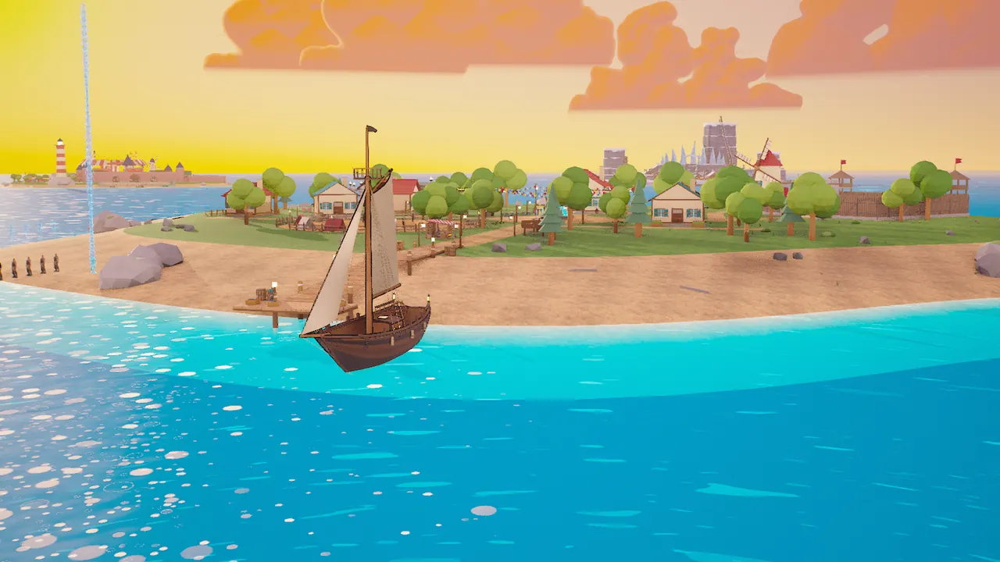
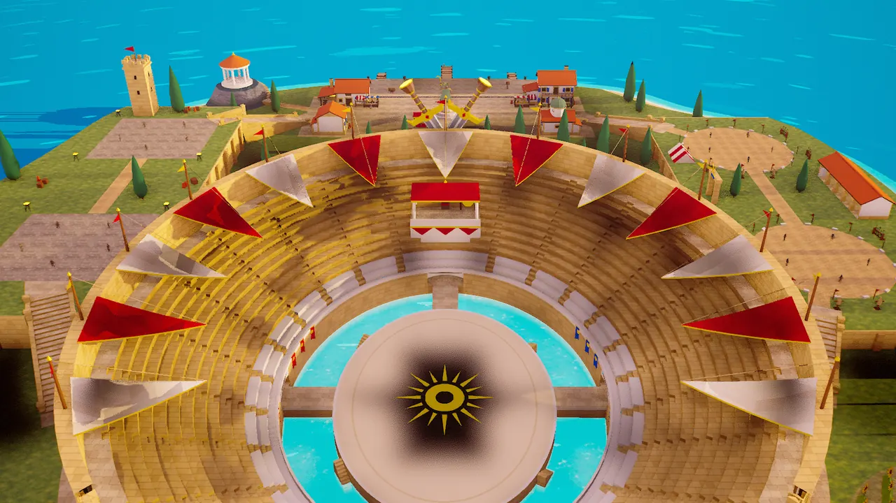

Wiki FruitBorne
Îles, fruits, boss, bateaux et niveaux : tous les chiffres de FruitBorne, lus dans le jeu.
FruitBorne est une aventure de pirates sur Fortnite : mange un fruit pour gagner un pouvoir, monte en Renom, prends la mer et affronte les boss de l'archipel. Ce wiki rassemble tout ce qu'il faut savoir, île par île.
Où monter de niveau
| Ton niveau | Mission | Île | Victoires demandées | Renom | Or |
|---|---|---|---|---|---|
| 1+ | Bandits | Île des Alizés | 5 | 100 | 300 |
| 10+ | Déserteurs élites | Île des Alizés | 5 | 540 | 550 |
| 15+ | Chef des bandits Boss | Île des Alizés | 1 | 1 450 | 1 000 |
| 30+ | Mutins | Citadelle de la Marine | 5 | 1 500 | 1 000 |
| 40+ | Canonniers mutins | Citadelle de la Marine | 5 | 2 000 | 1 600 |
| 50+ | Kade Mâchefer Boss | Citadelle de la Marine | 1 | 2 800 | 2 500 |
| 60+ | Singes agiles | Jungle | 5 | 3 120 | 2 500 |
| 70+ | Gorilles blindés | Jungle | 5 | 3 510 | 3 800 |
| 80+ | Roi Singe Boss | Jungle | 1 | 6 500 | 5 500 |
| 90+ | Pillards des Dunes | Dunes Calcinées | 5 | 6 220 | 6 000 |
| 100+ | Sentinelles du Sirocco | Dunes Calcinées | 5 | 6 750 | 8 500 |
| 120+ | Gardien de la Pyramide Boss | Dunes Calcinées | 1 | 12 000 | 9 000 |
| 125+ | Jongleurs du Ressac | Port-Bourrasque | 5 | 10 650 | 11 500 |
| 150+ | Hercules de Foire | Port-Bourrasque | 5 | 13 100 | 12 800 |
| 180+ | Capitaine Tintamarre Boss | Port-Bourrasque | 1 | 27 000 | 13 000 |
| 185+ | Trappeurs du Givre | Brisegivre | 5 | 22 500 | 16 200 |
| 210+ | Brise-Glace | Brisegivre | 5 | 30 000 | 21 700 |
| 230+ | Commodore Verglas Boss | Brisegivre | 1 | 45 000 | 16 500 |
| 235+ | Rétiaires des Marées | Colisée des Marées | 5 | 35 000 | 24 500 |
| 245+ | Champions de Bronze | Colisée des Marées | 5 | 40 000 | 27 000 |
Renom et or de la mission elle-même, sans les gains de chaque victoire ni les bonus.
Îles
 Île des AlizésNiveaux 1 – 15
Île des AlizésNiveaux 1 – 15 Citadelle de la MarineNiveaux 30 – 50
Citadelle de la MarineNiveaux 30 – 50 JungleNiveaux 60 – 80
JungleNiveaux 60 – 80 Dunes CalcinéesNiveaux 90 – 120
Dunes CalcinéesNiveaux 90 – 120 Port-BourrasqueNiveaux 125 – 180
Port-BourrasqueNiveaux 125 – 180 BrisegivreNiveaux 185 – 230
BrisegivreNiveaux 185 – 230
Colisée des MaréesNiveaux 235 – 245Bagne des AbyssesÀ venirNuées SonnantesÀ venir Fruit de la FuméeCommun
Fruit de la FuméeCommun Fruit du FeuÉpique
Fruit du FeuÉpique Fruit du MagmaLégendaire
Fruit du MagmaLégendaire Fruit du SableCommun
Fruit du SableCommun Fruit ÉlastiqueÉpique
Fruit ÉlastiqueÉpique Fruit des TénèbresÉpique
Fruit des TénèbresÉpique Fruit de la LumièreÉpique
Fruit de la LumièreÉpique